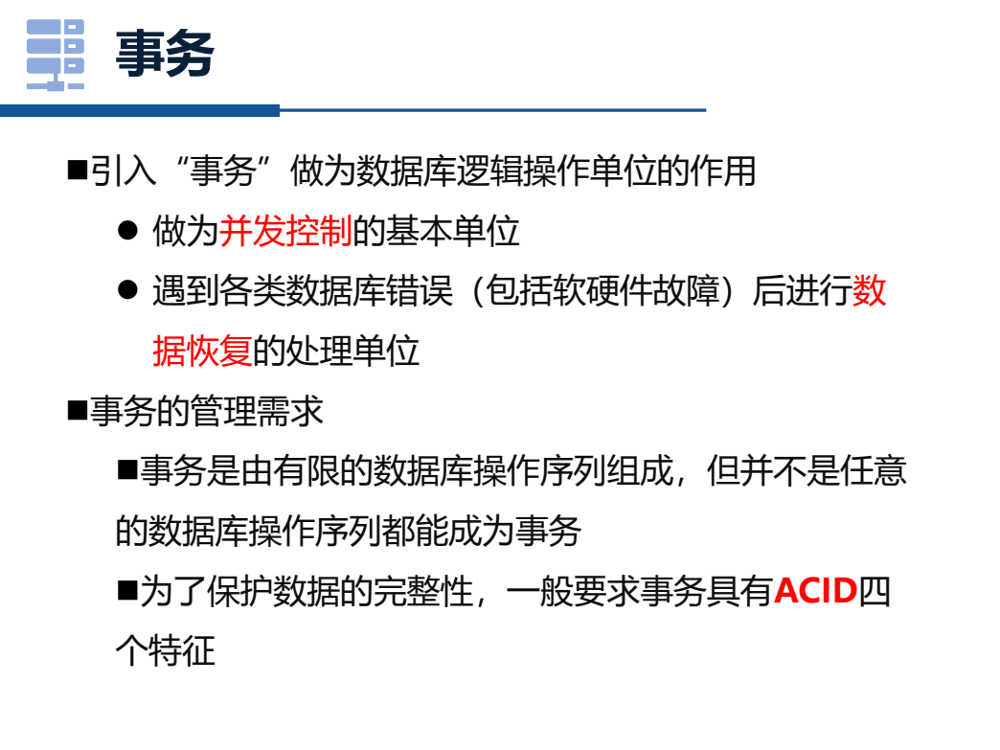

数据库大题从零深学讲义
目标：把范式、事务、恢复、ER 图这些大题地基讲成人话。今天不是直接啃符号，而是建立“题干出现什么，我该切到哪套流程”的反应。
0. 数据库大题分三类，不是一团雾
你看到数据库大题会慌，通常是因为 SQL、范式、事务、ER 图混在一起。先分流，题目就会变小。
第一反应口诀：R/F 看范式，T/read/write 看事务，业务名词看 ER，SELECT 查询看 SQL。
1. 范式题从零：函数依赖到底是什么
函数依赖 X -> Y 的人话是：只要 X 的值确定了，Y 的值也就被唯一确定了。比如学号确定姓名，学号 -> 姓名；但姓名不一定确定学号，因为可能重名。
2. 2023A 范式题怎么起步
2023A 给了关系模式：
R(A,B,C,D,E) F = { ABC -> D, E -> B, AD -> C }
这类题不要第一眼就分解。先求候选键，因为 BCNF 判断必须知道哪些左边是超码。
起步答案骨架：由于 A,E 不出现在任何依赖右部，候选键必须包含 A,E。计算 (AEC)+ = ABCDE，(AED)+ = ABCDE，且去掉任一属性后不能推出全属性，因此候选键为 AEC、AED。
为什么不能直接说 ABC 是键？
ABC -> D 只能推出 D，不能推出 E；所以 ABC+ 不是全部属性。候选键必须能推出 R 的所有属性。
3. BCNF 判断：看每条依赖左边是不是超码
BCNF 的人话：表里的每个“决定关系”都应该由足够强的钥匙来决定。形式化一点：对每个非平凡依赖 X -> Y，X 必须是超码。
在 2023A 的 F 中：
BCNF 分解模板：若 R 中 X -> Y 违反 BCNF，则分解为 R1 = X ∪ Y，R2 = R - (Y - X)。之后继续检查子关系。
现在先记模板，不急着追求一次分解到完美。考场写分解时最重要的是：说明依据哪条依赖分解、继续检查、最后说明无损连接/保持依赖。
4. 事务从零：为什么需要事务
事务不是抽象概念，它就是“要么全做，要么全不做”的一组数据库操作。最经典例子是转账：A 扣 100，B 加 100，两个操作必须同生共死。
ACID 不是死背：A 管失败撤销，C 管业务正确，I 管并发互不干扰，D 管提交后不丢。
5. 并发调度：先找冲突，再看能不能串行化
事务题看到 T1、T2、read/write，不要慌。先找冲突操作：不同事务、同一数据项、至少一个是 write。
有了冲突，就可以画优先图：如果 T1 的冲突操作在 T2 前，就画 T1 -> T2。图里没有环，就冲突可串行化；有环，就不可冲突串行化。
6. 2PL 和严格 2PL：锁题的第一反应
两阶段锁协议 2PL 的核心不是“有锁就行”，而是一个事务分两段：先增长，后收缩。
判断 2PL 模板：找每个事务第一次 unlock；如果它之后还 lock 新数据项，就违反 2PL。
7. 恢复题：Undo/Redo 先看提交没提交
恢复题的核心是崩溃后如何让数据库回到可信状态。最粗糙但好用的第一反应：未提交的要撤销，已提交的要保证留下。
2023A 事务恢复题里出现 Undo，就先找崩溃时哪些事务没提交。不要看到日志就立刻乱算。
8. ER 图从零：从业务名词变成实体和联系
ER 图题通常给一段业务描述，比如诊所、医生、患者、门诊记录。第一步不是画，而是抽三类东西：实体、联系、属性。
ER 答题模板：圈实体 -> 给属性和主键 -> 圈联系 -> 标基数 -> 转关系模式时处理 1:N 和 M:N。
9. 资料页参照
下面是从你的数据库 PDF 渲染出的关键页，用来校准题型来源。不要硬背截图，先掌握上面的步骤。




10. 主观训练：先写人话，再看答案
输入框会自动保存。你现在要练的是解释能力，不是秒选答案。
训练 1
用自己的话解释：函数依赖 X -> Y 是什么意思？为什么求候选键要算闭包？
参考答案
X -> Y 表示只要 X 的值确定，Y 的值也被唯一确定。闭包 X+ 表示从 X 出发，利用所有函数依赖能推出哪些属性。如果 X+ 包含关系模式的全部属性，说明 X 能唯一确定整行，是超码；再检查最小性，就能判断候选键。
训练 2
看到事务调度题，第一步应该做什么？什么叫冲突操作？
参考答案
第一步先找冲突操作，而不是直接判断串行化。冲突操作必须满足：来自不同事务、访问同一数据项、至少一个是写操作。根据冲突先后画优先图，图无环则冲突可串行化，有环则不可冲突串行化。
训练 3
ER 图题中，实体、属性、联系、基数分别是什么？请用诊所系统举例。
参考答案
实体是能独立存在的对象，如医生、患者、药品；属性是实体的信息，如医生编号、患者姓名；联系是实体之间的关系，如医生接诊患者、患者产生门诊记录；基数说明一对一、一对多或多对多，如一个医生可接诊多个患者。